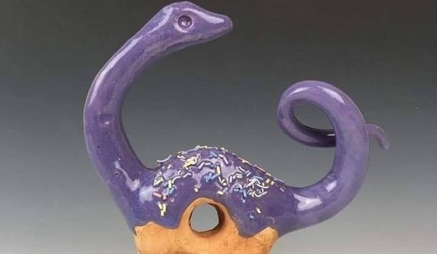
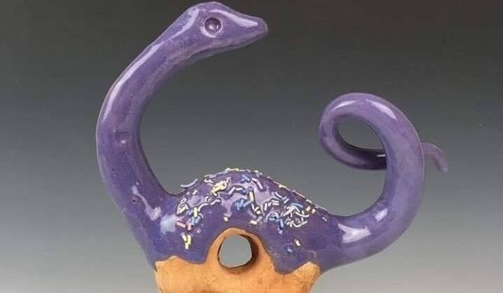
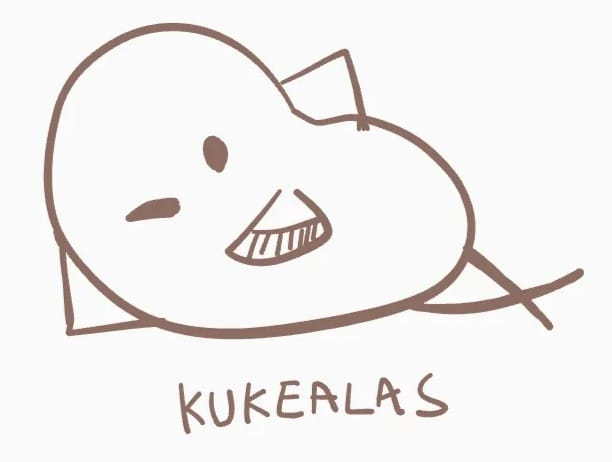
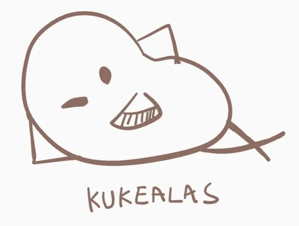

Sobre nosotros...
Nuestra empresa es orgullosamente mexicana, somos amantes de la repostería, pero en específico, de las donas. Recordamos con cariño las donas ya que desde siempre nos han encantado las donas, desde la niñez les tenemos enorme cariño, sobre todo a las de chocolate.
 Pero eso es lo mejor de las donas, que son versátiles y que hay miles de combinaciones, sabores y diseños de donas, además de que siempre se pueden crear nuevas combinaciones y nuevas recetas como nuestra dona vegana, para que así todo mundo pueda deleitarse con su delicioso sabor y textura.

Pero eso es lo mejor de las donas, que son versátiles y que hay miles de combinaciones, sabores y diseños de donas, además de que siempre se pueden crear nuevas combinaciones y nuevas recetas como nuestra dona vegana, para que así todo mundo pueda deleitarse con su delicioso sabor y textura.
  Por esa razón creamos esta empresa, por el amor y dedicación que le tenemos a las donas, porque nos encantaría que todo el mundo las pueda probar, además de que en la familia se ha pasado generación con generación la receta que a todo mundo le gusta, y creo que es mejor compartir esta receta con todo el mundo, ya que nuestras donas se distinguen por ser deliciosas, a buen precio y buen tamaño, además de que hemos implementado el servicio a domicilio para que nuestras donas lleguen a donde sea y no haya excusa para que las pruebes, incluso si quieres una opción saludable la tenemos, ¡No hay excusa para no probar nuestras donas!

Por esa razón creamos esta empresa, por el amor y dedicación que le tenemos a las donas, porque nos encantaría que todo el mundo las pueda probar, además de que en la familia se ha pasado generación con generación la receta que a todo mundo le gusta, y creo que es mejor compartir esta receta con todo el mundo, ya que nuestras donas se distinguen por ser deliciosas, a buen precio y buen tamaño, además de que hemos implementado el servicio a domicilio para que nuestras donas lleguen a donde sea y no haya excusa para que las pruebes, incluso si quieres una opción saludable la tenemos, ¡No hay excusa para no probar nuestras donas!
